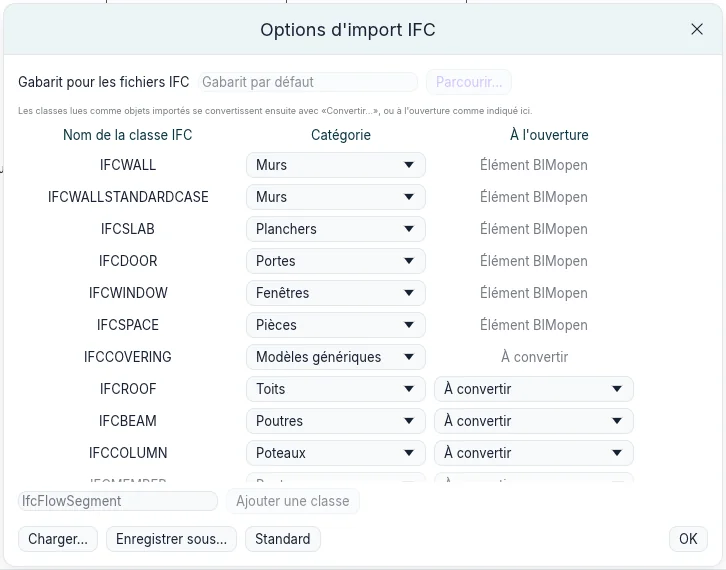
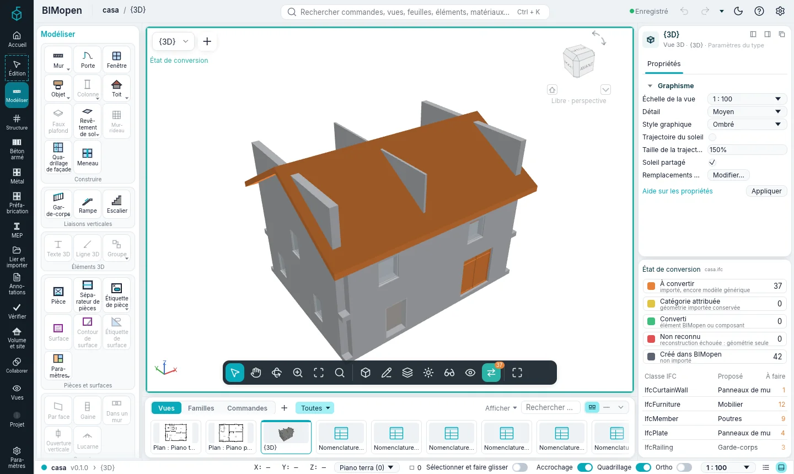
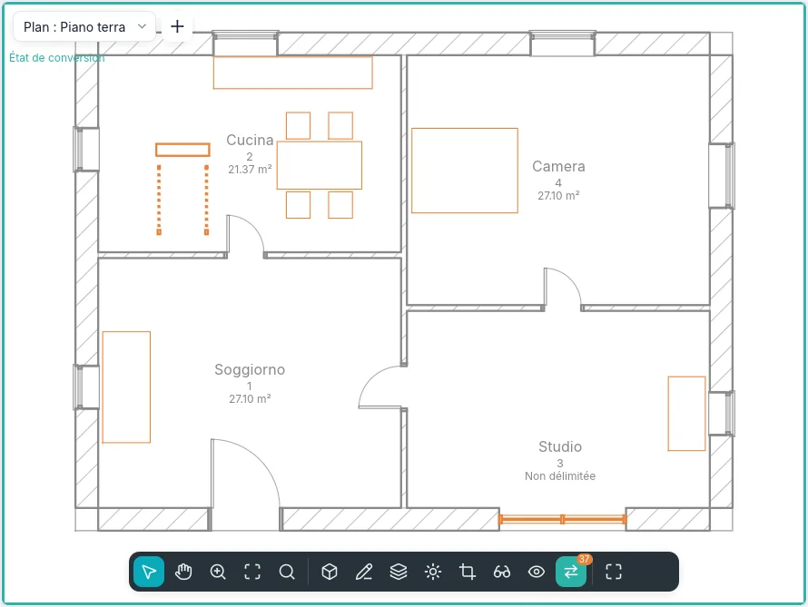
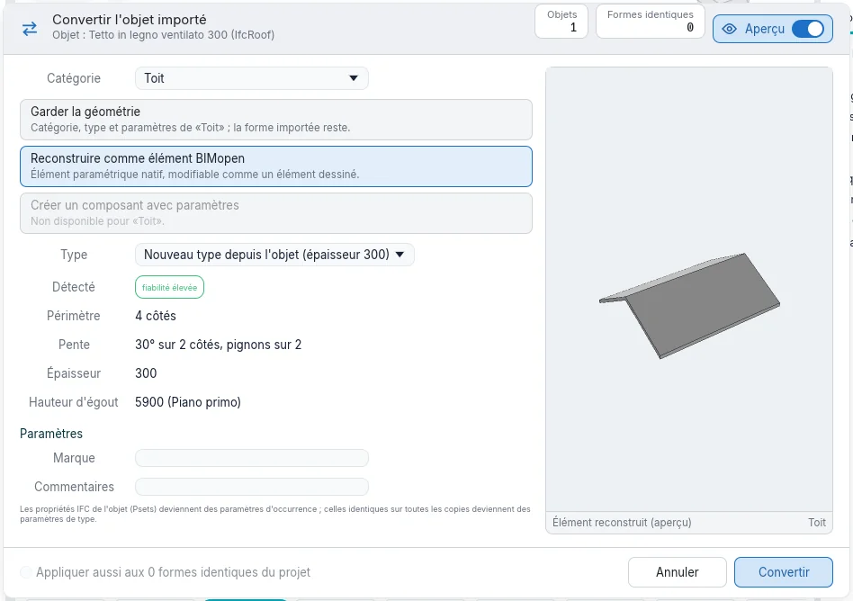
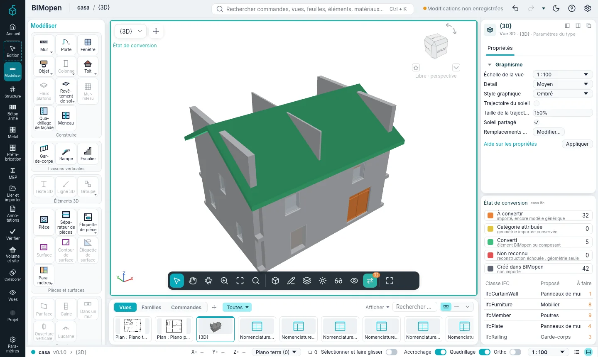
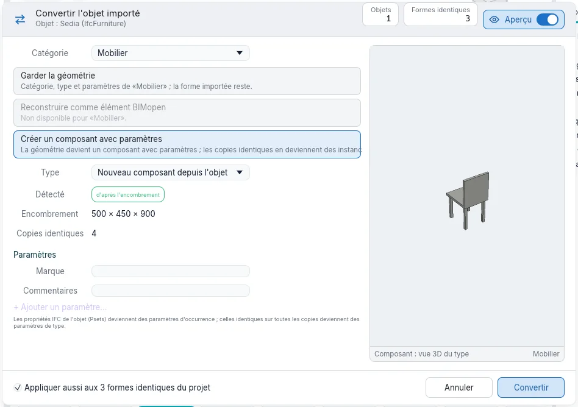
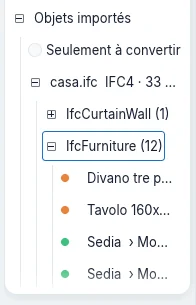
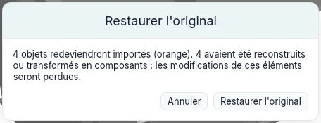

Importation et conversion
Un modèle fait avec un autre logiciel arrive sous forme de fichier IFC. BIMopen en lit les murs, les sols, les portes, les fenêtres et les espaces comme ses propres éléments. Tout le reste qui a une forme (toits, poutres, poteaux, escaliers, garde-corps, murs-rideaux, mobilier, appareils sanitaires) reste un objet importé : sa géométrie telle qu'elle a été lue, comme modèle générique. Convertir fait ensuite de chaque objet importé un élément BIMopen de n'importe quelle catégorie, quand et autant qu'il le faut.
Ouvrir un fichier IFC
- Ouvrez le menu de l'application (la marque de BIMopen en haut de la barre latérale) et choisissez Ouvrir ➤ IFC….
- Choisissez un fichier IFC2x3 ou IFC4.
BIMopen crée un nouveau projet : les étages deviennent des niveaux, les murs sont reconstruits à partir de leur axe, les dalles deviennent des sols, les portes et les fenêtres vont dans les murs que leurs ouvertures coupent, les espaces deviennent des pièces. Tout autre objet ayant une forme devient un objet importé. Chacun garde :
- le fichier d'où il vient et son format (
casa.ifc · IFC4) ; - sa classe IFC (
IfcRoof,IfcFurniture…) et son identifiant ; - l'objet dont il fait partie : les volées d'un escalier, les panneaux d'un mur-rideau ;
- ses jeux de propriétés et de quantités, dans Propriétés sous Propriétés IFC.
Les messages comptent ce qui a été lu, ce qui a été approché et ce qui a été laissé de côté.
Options d'import IFC
Coordonner ▸ Options IFC… ouvre Options d'import IFC : ce que devient chaque classe IFC à l'ouverture d'un fichier.

- Murs, dalles, portes, fenêtres et espaces sont lus comme Élément BIMopen ; chacun peut être lu à la place comme objet importé (Modèles génériques) ou laissé de côté (Non importé).
- Les autres classes sont lues comme objets importés. Catégorie est la catégorie proposée pour chaque classe quand on la convertit : n'importe quelle catégorie de BIMopen.
- À l'ouverture dit ce qui leur arrive à l'ouverture du fichier : À convertir les laisse pour plus tard ; Garder la géométrie, Reconstruire comme élément BIMopen ou Créer un composant avec paramètres les convertit tout de suite (voir plus bas).
- Ajouter une classe ajoute une classe que la liste n'a pas.
- Charger… lit un fichier de correspondance des classes, Enregistrer sous… en écrit un : un fichier texte, une classe par ligne. Standard remet la correspondance par défaut.
Les options sont gardées d'une session à l'autre.
État de conversion
Tant que le projet contient des objets importés encore à convertir, la barre de la vue affiche État de conversion, avec leur nombre. Son info-bulle dit combien il y en a et dans combien de classes IFC.
Cliquez dessus : la vue montre chaque objet dans la couleur de son état, dans un cadre bleu canard.
| Couleur | État | Signification |
|---|---|---|
| Orange | À convertir | importé, encore modèle générique |
| Jaune | Catégorie attribuée | géométrie importée conservée, avec une catégorie |
| Vert | Converti | élément BIMopen ou instance de composant |
| Rouge | Non reconnu | la reconstruction n'a pas reconnu la forme : géométrie seule |
| Gris | Créé dans BIMopen | non importé |

Il fonctionne dans les plans, coupes, élévations et vues 3D, et ne change que la fenêtre : le modèle et les autres vues restent tels quels. Tant qu'il est activé, seuls les objets importés peuvent être sélectionnés.

Le panneau État de conversion, sous Propriétés, contient :
- la légende avec le nombre de chaque état : un clic sur un état le masque dans la vue, ou l'affiche à nouveau ;
- les classes IFC ayant des objets encore à convertir, la catégorie proposée pour chacune et combien il en reste. Un clic sur une classe sélectionne ses objets à convertir et ouvre Convertir….
Quand il ne reste rien à convertir, le panneau le dit. Désactivez État de conversion et son bouton quitte la barre de la vue.
Dans le style Classique, le panneau est un onglet à côté de Propriétés ; en mode tactile, c'est une feuille, ouverte depuis les réglages de la vue.
Convertir un objet importé
Sélectionnez un ou plusieurs objets importés : la carte contextuelle Édition | Objets importés s'ouvre. Convertir… ouvre Convertir l'objet importé.

- Catégorie : ce que devient l'objet. La proposition de la classe vient en premier.
- L'un des trois modes (ci-dessous). Un mode qui ne s'applique pas à la catégorie est grisé.
- Type : l'un des types de la catégorie, ou un nouveau type fait depuis l'objet.
- Détecté : ce que BIMopen lit dans la forme et sa fiabilité.
- Paramètres : Marque et Commentaires, et les propriétés IFC de l'objet.
- Convertir.
L'aperçu montre ce que deviendra l'objet. L'interrupteur Aperçu de l'en-tête le masque ; la boîte de dialogue garde sa taille.
Les trois modes
| Mode | Catégories | Ce qui se passe |
|---|---|---|
| Garder la géométrie | toutes | L'objet prend la catégorie, un type et des paramètres. Il compte dans les nomenclatures, les filtres, la visibilité et l'export IFC comme élément de cette catégorie ; sa forme reste celle importée. Il se déplace, tourne et se met en miroir. |
| Reconstruire comme élément BIMopen | murs, sols, toits, portes, fenêtres | BIMopen lit la forme et crée l'élément natif, modifiable comme un élément dessiné : axe, épaisseur et hauteur d'un mur ; contour, épaisseur et niveau supérieur d'un sol ; contour, pentes, épaisseur et hauteur d'égout d'un toit ; une porte ou une fenêtre dans le mur où elle se trouve, avec sa largeur, sa hauteur et son allège. |
| Créer un composant avec paramètres | mobilier, appareils sanitaires, modèles génériques, portes, fenêtres, poteaux, poutres | La géométrie devient un type de composant avec Largeur, Profondeur et Hauteur tirées de son encombrement ; les changer étire la forme. L'objet devient son instance. |
Une forme qui ne peut pas être reconstruite comme la catégorie choisie devient rouge (Non reconnu) et reste telle qu'elle était : convertissez-la à nouveau en gardant sa géométrie. La reconstruction des poteaux, poutres, escaliers et garde-corps viendra dans une phase suivante.
Catégorie dans Propriétés fait la même chose que Garder la géométrie : y choisir une catégorie convertit tout de suite l'objet sélectionné.

Composants à partir d'objets importés
Créer un composant sur la carte contextuelle ouvre la boîte de dialogue avec Créer un composant avec paramètres choisi.

Les propriétés IFC identiques sur toutes les copies deviennent des paramètres de type ; celles qui diffèrent restent à chaque instance. Le composant apparaît dans l'Index du projet sous Objets importés, et ses Paramètres du type modifient toutes les instances à la fois.
Formes identiques
Les copies d'une même forme, déplacées et tournées en plan, sont reconnues comme identiques. Sélectionner les formes identiques les sélectionne ; dans la boîte de dialogue, Appliquer aussi aux N formes identiques du projet les convertit ensemble (activé par défaut pour un composant). Instances d'un seul composant, elles occupent moins de mémoire et se dessinent plus vite dans les grands modèles.
Sélectionner les objets importés
- Sélectionner la classe sélectionne les objets importés de la même classe IFC.
- Une classe dans le panneau État de conversion, ou Tout convertir (N)… sur une classe dans l'Index du projet, sélectionne ses objets à convertir et ouvre la boîte de dialogue.
- Un objet qui fait partie d'un autre (une volée d'escalier) va avec lui : convertir l'ensemble emporte ses parties.
Les objets importés dans l'Index du projet
Objets importés dans l'Index du projet liste chaque fichier lu, avec son format et le nombre d'objets qui restent à convertir ; dessous, les classes IFC, sous chaque classe ses objets, avec la couleur de leur état et, une fois convertis, la catégorie qu'ils sont devenus. Les objets faits de parties listent leurs parties dessous.

- Seulement à convertir masque ce qui est déjà converti.
- Un clic sur un objet le sélectionne ; un double clic le montre dans une vue.
- Le bouton droit sur une classe : Tout convertir (N)…, Sélectionner tous ceux à convertir (N), Restaurer les originaux (N).
- Le bouton droit sur un fichier : les mêmes, et Supprimer les références d'origine….
- Le bouton droit sur un objet : Convertir…, Sélectionner les formes identiques, Afficher dans la vue, Masquer dans la vue, Restaurer l'original.
Restaurer les originaux
Ce qu'une conversion remplace reste dans le projet, dans le fichier .bimopen : l'objet
d'origine, avec les parties qu'il a emportées. Restaurer l'original (sur la carte
contextuelle, dans l'Index du projet ou dans le menu du bouton droit) le remet tel qu'il a été
importé, de nouveau orange.

Elle demande d'abord confirmation, et dit ce qui sera perdu : les modifications faites sur les éléments reconstruits ou les composants, et les portes et fenêtres des murs convertis. Un composant créé par la conversion part avec sa dernière instance. Annuler reprend une conversion ou une restauration comme toute autre modification.
La géométrie des originaux est stockée une seule fois pour chaque maillage identique ; les garder coûte donc peu. Quand les conversions sont définitives, Supprimer les références d'origine… sur le fichier dans l'Index du projet supprime les originaux : ensuite, Restaurer l'original n'est plus possible.
Bientôt
- Mettre à jour depuis le fichier : relire le fichier d'origine et mettre à jour ses objets.
- Des outils par face, pour poser murs, sols et toits sur des formes libres et courbes.
- La reconstruction des poteaux, poutres, escaliers et garde-corps.
- La conversion des objets des fichiers OBJ et glTF avec la même boîte de dialogue.